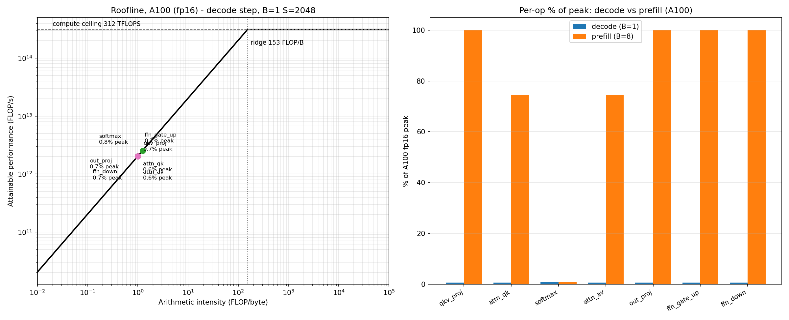

Per-op roofline model for inference: where the wall is, and what fusion moves
LLM serving has two latency regimes with opposite bottlenecks. Decode (one token at a time) feels slow because each step re-reads the entire weight matrix for a handful of FLOPs; prefill (the prompt pass) is a different animal. Without a quantitative model, "make it faster" devolves into guessing which kernel to optimize.
Most roofline treatments of transformers stop at a single GEMM or quote aggregate TFLOPS. This project builds a per-op roofline for a full decoder layer — QKV projection, QK^T, softmax, AV, output projection, SwiGLU FFN — with explicit byte accounting (weights, activations, KV-cache reads), so each op gets an arithmetic intensity, a bound label, a % of peak, and an estimated time. Fusion is modeled as a transform on the byte traffic, not hand-waving.
src/llm_inference_engine/roofline/ (numpy, CPU-only, analytical):
hardware.py — Hardware dataclass (peak FLOPS per dtype, memory bandwidth). A100 (312 dense FP16 TFLOPS, 2039 GB/s), H100 (989 dense FP16 TFLOPS, 3350 GB/s) from published specs; an illustrative CPU reference.ops.py — FLOP/byte accounting per op for a layer config (d_model, n_heads, ffn_mult, batch, seq, dtype). Decode reads the KV cache for one query token; prefill materializes the SxS score matrix.model.py — roofline classification (attainable = min(peak, intensity * bw), % of peak, memory/compute-bound vs the ridge point) plus two fusion transforms: - FlashAttention-style: QK^T + softmax + AV fused; the score matrix is never materialized, so bytes drop from O(BHS^2) to O(BHS). - Fused dequant+GEMM: weights stored quantized (e.g. INT8) and dequantized on the fly; weight-read bytes scale by the byte ratio.experiments/run_experiments.py is deterministic (analytical; two runs produce identical SHA-256 fingerprints of the outputs).
| Regime (A100, 7B-ish, S=2048) | Memory-bound | Step time | Dominant op |
|---|---|---|---|
| Decode B=1 | 7/7 (~0.65% of peak) | 181.3 µs | ffn_gate_up 36.3% |
| Prefill B=8 | 3/7 (GEMMs compute-bound @100%) | 22.10 ms | ffn_gate_up 31.9% |
FlashAttention-style fusion: 1.001x decode (nothing to kill at B=1), 1.139x prefill (attention intensity 112.7 → 1034 FLOP/byte). Fused INT8 dequant+GEMM: 1.831x decode step. Deterministic; two runs identical.

experiments/run_experiments.py — re-running reproduces these exactly.src/llm_inference_engine/roofline/
hardware.py # A100 / H100 / CPU published specs
ops.py # per-op FLOP/byte accounting for a decoder layer
model.py # classification + fusion transforms
07-roofline/
experiments/run_experiments.py # decode vs prefill + fusion estimates
results/ # results.md + charts.png (generated)
Full source, tests, and experiment code: 07-roofline/ ·
Run: cd 07-roofline && python3 experiments/run_experiments.py